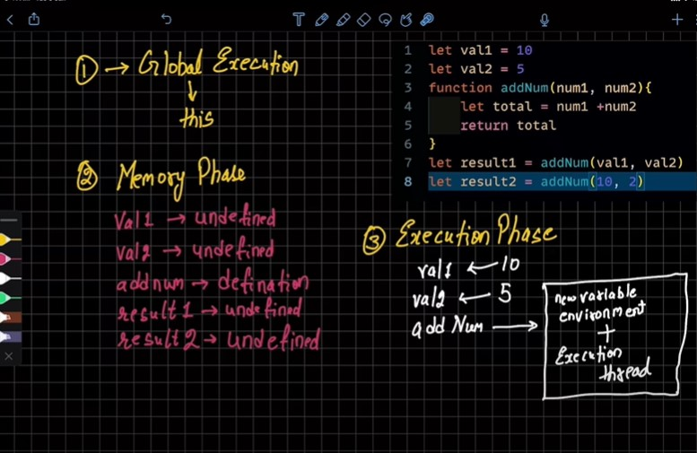
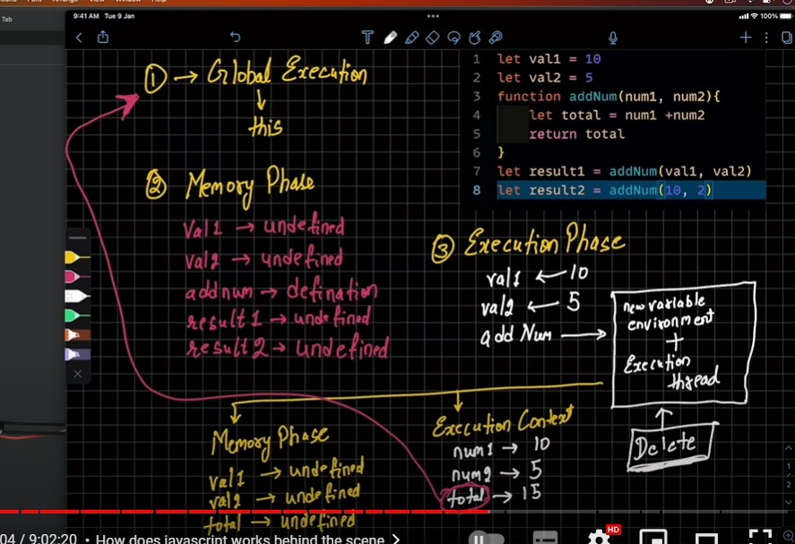

javascript execution Context means how does code get execute in a js/ bhow your js file will get executed. for this js runs ur progrm in 2 phases
As per the environment (browser/node environment) the value of this is different. in browser object the value of this is window object.
let val1 = 10;
let val2 = 5;
function addNum(num1, num2) {
let total = num1 + num2
return total
}
let result1 = addNum(val1, val2);
let result2 = addNum(12,52)

for addNum new memory phase and execution phase is developed. note:- jitnni bar ye function execute hotay hai utni bar new memory phase and execution phase banta hai
let result1 = addNum(val1, val2); we have to see for the function otherwise mistake happens;
function addNum(num1, num2) {
let total = num1 + num2
return total //total after execution from function is returned to GEC after return the formed memory an dexecution phase is deleted see in fig below
}
